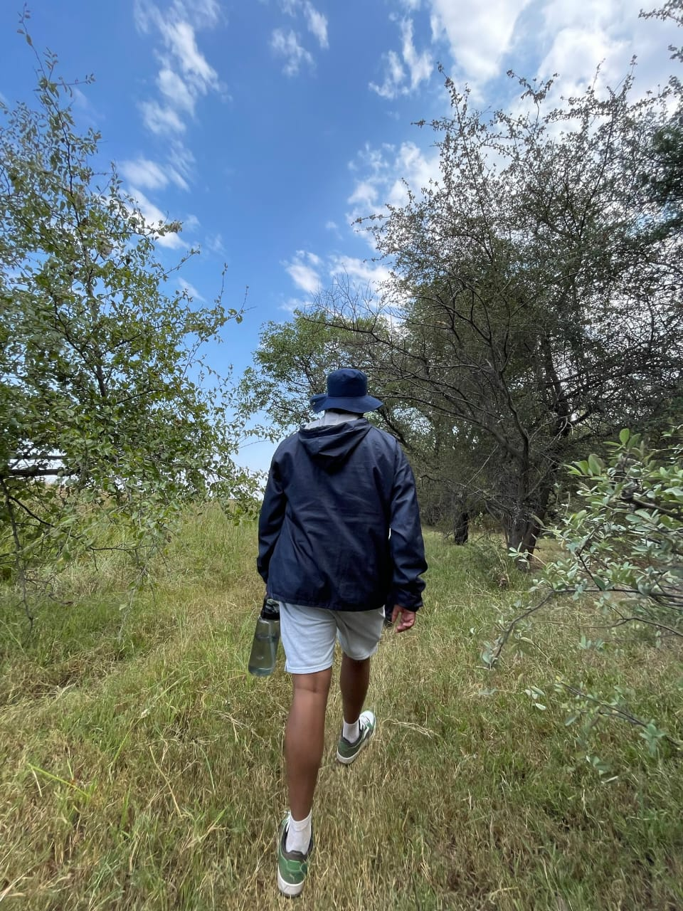
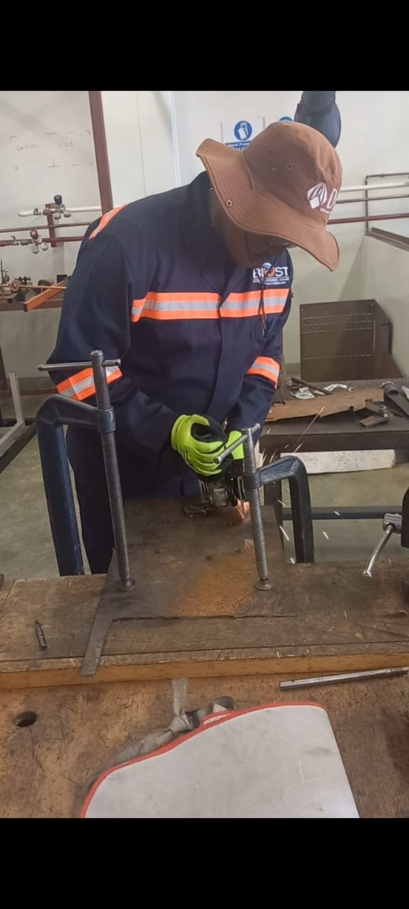

Hi, I'm Pako Fain Mojuta
BSc Hons Computer Systems Engineering — aspiring Industrial Automation & Instrumentation specialist from Selebi Phikwe, Botswana.
I build reliable systems that keep machinery running — I enjoy hiking, gaming, cooking, and football. I combine discipline with a growth mindset and practical skills in web dev, Office automation, and instrumentation basics.
Curriculum Vitae
Contact
Email: fainmojuta@gmail.com
Phone: +267 77950322
Hometown: Selebi Phikwe, Botswana
Professional Summary
Practical Computer Systems Engineering student focused on industrial automation and instrumentation. Skilled in HTML, CSS, JavaScript, Excel/VBA, Access, Adobe Illustrator, and power tools operation. Reliable and experienced in small-business financial tasks.
Work Experience
Shopkeeper, Family Supermarket — handled accounts, daily deposits, sales tracking and basic bookkeeping.
Education
- BSc Hons Computer Systems Engineering — Botswana Accountancy College (current)
- BIUST — Chemical Engineering (2022)
- Selebi Phikwe Senior Secondary School — BGCSE
Technical Skills
- HTML • CSS • JavaScript
- Excel, Access, PowerPoint, Word, VBA
- Adobe Illustrator (vector & simple animation)
- Power Tools Operation & Maintenance
- Database basics
Academic Reflection
A Lesson in Resilience: My Academic Restart
My journey to higher education has been a profound lesson in self-awareness and discipline. Before enrolling at the Botswana Accountancy College, I was a student at the Botswana International University of Science and Technology (BIUST) in 2022. I must be honest; I did not perform well. My initial approach was lackadaisical; I did not "hit the ground running." I attended lectures irregularly and allowed myself to fall behind, which detrimentally impacted my academic results.
This experience, while difficult, became my greatest teacher. Upon receiving a fresh start at BAC, I committed to a complete transformation. I conducted a serious review of my previous failures and identified the core issues: inconsistency and procrastination.
Now, my approach is fundamentally different. I have not missed a single lecture, ensuring I am present for every learning opportunity. I maintain a strict study timetable and adhere to it habitually, tackling assignments well before their deadlines. I've also learned to prioritize my weaknesses; I no longer dwell on topics I already understand, as this creates a false sense of security and overshadows the work needed on challenging concepts.
Furthermore, I understand that success is not inherited by association. While surrounding myself with diligent peers is beneficial, it is my own dedication and hard work that will determine my outcome. To maintain balance, I consciously make time for hiking and football, giving my mind essential breathers. This restart has taught me that resilience is not about never failing, but about learning how to comeback stronger and more focused than before.

Hiking helps me maintain balance and clear thinking
Group Work Reflection
Navigating Digital Hurdles: A Spontaneous Group Formation
Our group for the communication studies assignment was formed spontaneously, without much formality. We quickly agreed to collaborate and moved our discussions to a Microsoft Teams meeting. This initial Forming stage was efficient; during the first meeting, we allocated roles and outlined our plan of action with clear deadlines.
The Storming stage presented itself not through personal conflict, but through external, logistical challenges. Our meetings were scheduled during the semester break, which meant inconsistent internet access and occasional power cuts prevented some members from attending consistently. This created a bottleneck in our workflow and required constant rescheduling.
During the Norming phase, we established clearer communication protocols. We created a WhatsApp group for quick updates and implemented a "buddy system" where members with better internet access would share notes with those who missed meetings. We also set up a shared Google Drive folder for collaborative work, ensuring everyone could contribute regardless of their connectivity issues.
While we established these norms, we struggled to reach a consistent Performing stage. The varying levels of access and commitment meant that to ensure progress, work sometimes had to be reassigned or completed by other members. This was a double-edged sword; it was good because the project moved forward, but frustrating as it felt uneven in contribution.
The Adjourning stage was abrupt once the submission was complete, but we did have a brief virtual meeting to reflect on the experience. Reflecting on this, I learned that effective teamwork in a digital environment requires not just clear roles, but also proactive communication, flexibility, and contingency planning for technical challenges. It was a practical lesson in adaptability and the realities of remote collaboration in Botswana's context.
Key Lessons Learned:
- Digital collaboration requires backup communication plans
- Clear role definition prevents task duplication
- Flexibility is crucial when facing technical limitations
- Proactive communication can overcome participation gaps
- Remote work demands more explicit coordination
Skills & Projects
🚀 Live Skills Matrix
// Interactive Skills Matrix
const skills = [
{ name: "HTML/CSS", level: 85 },
{ name: "JavaScript", level: 70 },
{ name: "VBA/Excel", level: 80 },
{ name: "Power Tools", level: 75 },
{ name: "Adobe Illustrator", level: 75 }
];
function animateSkills() {
skills.forEach((skill, index) => {
const bar = document.getElementById(skill.name);
bar.style.width = skill.level + '%';
animateCounter(skill.name, skill.level);
});
}Click "Run Code" to see the animation
💼 Microsoft Office & VBA
Advanced proficiency in Excel, Access, Word, and PowerPoint with VBA automation. Created automated sales tracking systems and data processing macros that improved efficiency by 40% in family business operations.
🌐 Web Development
Front-end development with HTML, CSS, and JavaScript. Built responsive websites and interactive web applications. This portfolio demonstrates my coding capabilities with live interactive elements.
🔧 Power Tools & Practical Skills
Experienced with various power tools including angle grinders, drills, and saws. Comfortable with hands-on work and equipment maintenance, complementing my technical engineering knowledge.

Practical experience with power tools and equipment
🎨 Digital Design
Created animated graphics and vector illustrations using Adobe Illustrator. Designed visual content for presentations and digital projects, combining technical skills with creative design.
🏭 Industrial Systems
Foundational knowledge in industrial automation and instrumentation. Studying computer systems engineering with focus on programming industrial machinery and control systems.
Application Letter
Pako Fain Mojuta
Selebi Phikwe
Botswana
[Current Date]
The Hiring Manager
TechAvast Solutions
P.O. Box 789
Gaborone, Botswana
RE: Application for Industrial Attachment – Computer Systems Engineering Student
Dear Sir/Madam,
I am writing to apply for the Industrial Attachment position advertised on your company's careers portal. I am a first-year BSC Hons Computer Systems Engineering student at the Botswana Accountancy College, eager to gain practical experience in a professional engineering environment.
My coursework has provided me with a foundation in systems logic, programming, and software tools. I am proficient in Microsoft Office Suite, including advanced Excel and Access, and have basic skills in HTML and VBA. Through my previous role assisting in my family's supermarket, I developed strong problem-solving, time-management, and financial literacy skills. I have hands-on experience with power tools and practical equipment maintenance, which complements my technical knowledge.
I am particularly drawn to TechAvast Solutions due to your company's focus on integrating software with industrial systems, which aligns closely with my career interest in automation and instrumentation. I am impressed by your innovative approach to industrial automation and believe my combination of technical skills and practical experience would allow me to contribute meaningfully to your projects.
I am a resilient and proactive learner, committed to contributing positively to your team. I maintain excellent attendance records, adhere to strict deadlines, and have demonstrated my ability to learn from past experiences to improve my performance continuously.
My CV is attached for your review. Thank you for considering my application. I look forward to the opportunity to discuss how my skills and enthusiasm can benefit TechAvast Solutions during my attachment period.
Yours faithfully,
Pako Fain Mojuta
Pako Fain Mojuta
Professional Email Template
Subject: Application for Industrial Attachment – Pako Fain Mojuta
Dear [Hiring Manager],
I hope you are well. My name is Pako Fain Mojuta, a first-year BSc Hons Computer Systems Engineering student at Botswana Accountancy College. I am writing to express my interest in the industrial attachment opportunity at your company.
I have developed skills in web development, Microsoft Office automation, power tools operation, and database management through my coursework and practical experience. I am particularly drawn to your company's work in industrial automation and believe my technical background would allow me to contribute effectively to your team.
Please find my CV and application letter attached for your review. I am available for an interview at your earliest convenience and look forward to discussing how I can contribute to your organization.
Thank you for your time and consideration.
Sincerely,
Pako Fain Mojuta
fainmojuta@gmail.com
+267 77950322
Study Tips
- Kinesthetic learning: study while folding clothes or with a Rubik's cube.
- Use NotebookLM to convert lecture slides into audio summaries.
- Feynman technique: teach what you learn out loud.
- Digital flashcards & spaced repetition.